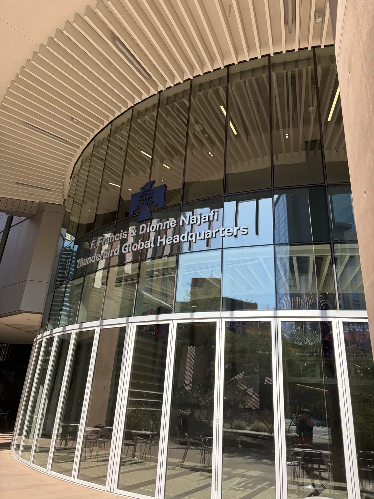
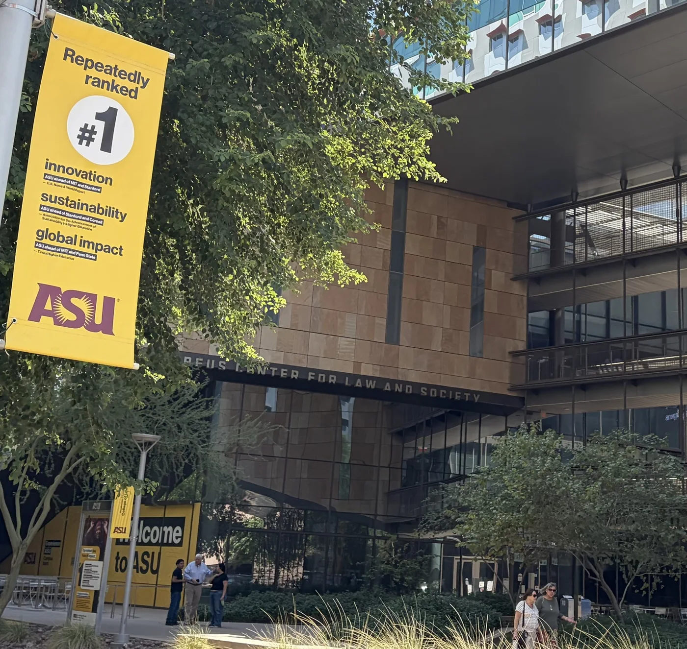
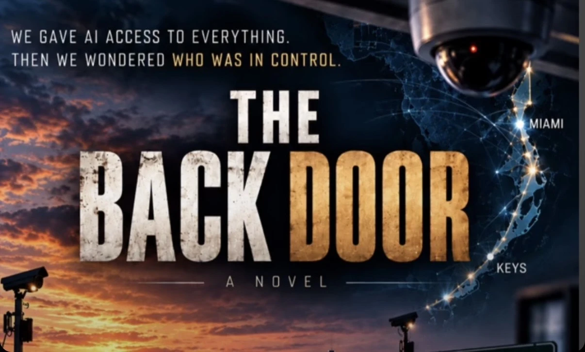

Human operators, explicit commands and localized systems.
Grand Research Institute · ConsciousAI research ecosystem
The AI
Paradox Lab
An independent educational research environment examining the gap between rapidly expanding AI capability and institutional capacity to govern consequential decisions. We investigate system-level compliance, algorithmic management, agentic delegation, and auditable human oversight.
Research and education · Hypotheses are not findings · No autonomous operational controlVisual research atlas / Computing and institutional change
Technology accelerates. Institutions must adapt.
From early personal computers to interconnected AI infrastructure, technological capability has expanded across organizations and borders. The laboratory studies the resulting challenges for human authority, accountability and governance.
Compute clusters, platforms and algorithmic coordination at scale.
Delegated authority, systemic dependencies and the need for verifiable oversight.
Visual motifs are illustrative, not photographs of specific facilities or evidence of historical causation. GRI is independent; academic study informs the research but does not imply institutional endorsement.
Research theme / Leadership and lifelong learning
The AI Learning Paradox
As autonomous systems become more capable, leaders must continually learn to govern decisions they increasingly delegate. Yet technological change may outpace the ability of executives and institutions to develop those competencies.
This is a proposed research hypothesis—not a demonstrated universal relationship. The Grand Research Institute examines how AI literacy, executive education, global management, cultural intelligence and institutional accountability interact in the Fourth Industrial Revolution.


CONTINUOUS LEADERSHIP LEARNING / GRI RESEARCH AGENDA
Leadership must keep learning as technology changes.
Governing intelligent systems requires an evolving understanding of the institutions, markets and physical infrastructure around them. GRI connects continuous executive learning with six areas of inquiry, examining what leaders need to understand, which assumptions require revision and where human judgment remains accountable.
Finance and economic institutions
Examine automated financial decisions, capital allocation, risk and institutional oversight.
Global trade and production
Study supply chains, industrial policy, technology dependencies and changing trade relationships.
AI and emerging technologies
Reassess capabilities, limitations and delegated authority across models, agents and robotics.
Tools and infrastructure
Understand the compute, data, networks and verification tools that support intelligent systems.
Sustainability and resilience
Evaluate resource demands, environmental consequences and institutional capacity to adapt.
Energy and new sources
Investigate AI electricity demand, generation options, grid constraints and evidence behind emerging energy claims.
Continuous learning means revisiting evidence, testing assumptions and adapting governance. It does not mean that every deployed AI model updates itself: model training, operational feedback and organizational learning are distinct processes.
Explore the AI Learning Paradox working paper →Photographs supplied by the GRI founder for this feature. Campus imagery provides educational context. GRI is independent; no ASU or Thunderbird sponsorship or endorsement is implied. Rankings visible in the photograph are historical signage, not current ranking claims.
AI capability growthRobotics, agents and algorithmic operations
Leadership transformationNew decision rights and responsibilities
Continuous learningEducation, experience and reassessment
Governance capabilityHuman oversight and institutional legitimacy
Who governs autonomous decisions?
Study how executives establish delegation boundaries, human approval requirements, escalation procedures and contestable decisions as intelligent systems assume operational functions.
How do experienced leaders relearn?
Examine continuous executive education across career stages. A reflective founder learning journey may illustrate the question, but is not independent evidence that education improves governance outcomes.
What changes across cultures and industries?
Compare global manufacturing, supply chains, technology companies and mobility platforms. Apple, Jabil and multinational production networks are candidate cases, not findings about any named company.
Which competencies predict accountability?
Evaluate whether demonstrated AI literacy, cross-cultural leadership, systems thinking and institutional judgment correlate with measurable oversight quality and organizational adaptation.
Proposed Continuous Executive Governance Competency Framework
Technical and AI literacy
Understand capabilities, limitations, automation boundaries, model drift and operational dependencies.
Global and cultural leadership
Adapt managerial practice across national and organizational contexts without treating cultural patterns as fixed stereotypes.
Institutional accountability
Demonstrate authorization controls, human oversight, provenance, contestability and response to failure.
Candidate measures include learning frequency, assessed executive AI literacy, clarity of decision rights, unsafe-action and false-approval rates, intervention latency, trace completeness and stakeholder review. The framework requires empirical testing, appropriate comparators and explicit limitations before causal claims.
GRI RESEARCH PROGRAM / LEADERSHIP & INSTITUTIONAL LEARNING
The AI Learning Paradox: Why Autonomous Systems Require Continuously Educated Leaders
Grand Research Institute is developing an independent body of research examining how autonomous technologies reshape executive competence, organizational learning, cross-cultural leadership and institutional responsibility. The program connects global technology production, management education and AI governance through comparative analysis and documented research methods.
Each working paper, case analysis and research instrument is intended to form part of a cumulative, transparent research foundation: propositions are articulated, evidence is evaluated, limitations are recorded and findings can be revisited as technologies and institutions change.
Research status: conceptual framework and working synthesis. Prior readings and discussions—including accounts of Apple in China, organizational learning, and graduate management education—inform research questions but require source verification before being represented as independently established empirical findings or attributed quotations. GRI is independent; references to Thunderbird School of Global Management at Arizona State University do not imply university sponsorship or endorsement.
Research integrity: proposed mandatory executive learning is a normative policy option, not an established effectiveness result. This page does not claim that any named executive lacks competence, nor that particular factories have replaced their workers with robots.
01 / Research framework
Where capability outruns control.
The laboratory distinguishes conceptual models, fictional teaching cases, research prototypes and empirically supported observations. No claim of model performance or governance effectiveness is made without reproducible evaluation.
AI Compliance Paradox
Test whether locally compliant decisions can interact to create system-level risk, and identify where cross-system oversight is required.
Algorithmic & Agentic Management
Examine dispatch, incentives, human discretion, delegated agent authority, escalation thresholds and measurable operational consequences.
Institutional Governance
Specify decision rights, authorization boundaries, source provenance, review procedures, contestability and auditable responsibility.
02 / Fictional teaching case
When systems obey, but outcomes fail.
Consider a synthetic emergency coordination exercise in which transportation routing, communications, utility allocation and logistics agents independently optimize under different institutional constraints.
Individual policy compliance does not establish that the combined outcome is safe or accountable. A controlled exercise can test how competing objectives, delayed escalation and ambiguous authority produce coordination failures, while evaluating whether review gates mitigate those risks.
Scenario status: synthetic and unvalidated. No real incident, participant data, emergency forecast or operational deployment is represented. This scenario is not drawn from the commercial novel’s protected narrative assets.
03 / Research method
From hypothesis to evidence.
1. Frame the system boundary
Identify actors, institutions, decision rights, system objectives and affected populations.
2. Map algorithmic decisions
Document inputs, optimization criteria, dependencies, delegated actions and human override points.
3. Define policy and evidence gates
Specify provenance, permissions, approval requirements, contestability and audit logging before experiments.
4. Compare governed and ungoverned scenarios
Pre-register datasets, baselines and measures including false approval rate, unsafe action rate, intervention latency, trace completeness and distribution shift; report uncertainty and failure cases.
5. Review limitations and publish responsibly
Separate hypotheses, simulated outcomes and empirical findings; require documented human authorization before publication, training use or operational integration.
04 / Institutional assurance
The architecture of accountability.
A research-grade AI governance system must demonstrate not only what it can generate, but what it can substantiate, reproduce, and safely refuse to do.
Provenance & Rights
Record origin, timestamp, permitted use, version and verification status. Unverified material remains explicitly unverified.
Human Authorization
Default to review-required for consequential publication, external actions and training eligibility. No implied permission from technical capability.
Traceability
Preserve decision records, policy outcomes, reproducible tests and independent recovery evidence. Missing evidence is not a passed control.
Research maturity statement
This website presents a conceptual and educational framework, not certification of a production governance system. Independent encrypted offsite restoration, production evidence-workflow integration and comparative ML experiments require separate validation before any claims of completion.
Integrated research architecture / Fourth Industrial Revolution
From managing people to governing intelligent systems.
The AI Governance Paradox connects the transformation of leadership with the institutional consequences of autonomous decisions. A single executive's responsibilities can now extend across people, software agents, algorithms, robotic systems and public-facing digital infrastructure. These are research domains—not claims of validated outcomes.
AI Governance Paradox
What happens when successful optimization reshapes the environment, authority and institutions around it?
AI Learning Paradox
How do leaders continually develop the competencies required to authorize and govern increasingly autonomous systems?
Mobility platforms, incentives, worker adaptation and accountability
Delegated agents, authorization boundaries and traceable decisions
AI labeling, evidence provenance and institutional verification prototypes
Public-sector decision rights, oversight, recourse and legitimacy
Automated screening, ranking, procedural fairness and contestability
Robotics, drones, autonomous mobility and distributed operational risk
Capability transfer, workforce change and cross-cultural leadership
Continuous AI literacy, cultural competence and governance judgment
Illustrative research portfolio. The Treasury work is an independent GRI research prototype, not a U.S. Treasury deployment. Named companies and institutions are potential case subjects, not endorsers or evidence of wrongdoing.
Read the integrated institutional research report with verified evidence exhibits
View the approved 22-page GRI institutional report (PDF)
PDF hosted in the separate THE-BACK-DOOR GitHub repository; the research report and source ledger are maintained in ConsciousAI.
GRI / Research publications
An evolving body of independent research.
Grand Research Institute publishes working papers and research materials as dated, inspectable foundations for further inquiry. Drafts distinguish conceptual propositions from validated findings; publication does not imply peer review or institutional endorsement.
The AI Learning Paradox
Why Autonomous Systems Require Continuously Educated Leaders
A conceptual research foundation connecting AI capability, continuous executive education, cross-cultural leadership, delegation, and institutional accountability. Includes proposed research questions, a governance competency framework, and evidence limitations.
Read Working Paper 001 on GitHub
Public working draft · Not peer reviewed · Source verification and empirical research in progress
From working hypotheses to evidence
Future versions will expand the verified literature, develop comparative organizational cases, specify reproducible governance measures and document empirical limitations. The research repository preserves the current version and its revision history.
05 / Research boundaries and connected resources
Independent research. Protected creative IP.
GRI GLOBAL INTELLIGENCE · BRAZIL / ISRAEL / UNITED STATESFrom a country case to an interconnected research system.Explore the global intelligence dashboard →Independent research developed by David Grand at Grand Research Institute. Beginning with the Brazil case, this evolving program connects Brazil, Israel and the United States through comparative research on political institutions, global trade, algorithmic management and artificial intelligence. It extends the themes of From Code to Consciousness and the AI Paradox through recurring evidence collection, experimental machine learning classification and traceable connections to the GRI research repository.
Conceptual artwork. Source coverage and collection status are disclosed in the dashboard. Classification and proposed research connections require review; they do not establish causation or validated political forecasts.
ConsciousAI / GRI research
Research documentation, governance prototypes and the institutional intelligence dashboard. Code and published results should be evaluated against their own stated limitations and evidence.

Explore The Back Door →The Back Door / Creative intellectual property
The Back Door is a separate creative intellectual property spanning a novel and potential interactive and screen adaptations. Its characters, narrative, visuals and commercial rights are not part of this research laboratory.
Official creative property website (separate)
Reference only; no implied licensing, research endorsement or transfer of creative assets.
Independent educational research. No university, government or commercial endorsement is implied. No personal participant data is collected by this static page.